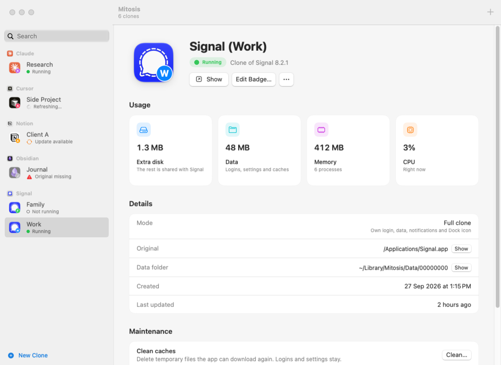

Separate logins
Stay signed in to different accounts at the same time.
One app. Separate worlds.
Keep work, personal, and every other login in its own app.
Install MitosisFree and source-available Native macOS
Get started
Paste this in Terminal. It checks the download before installing and needs no admin password.
Loading command…
Loading command…
Installs Mitosis.app in Applications and the mitosis command. Needs macOS 15 or later on Apple silicon. Prefer a download? Get the .zip from GitHub Releases.

Made for more than one account
Stay signed in to different accounts at the same time.
Settings, chats, and caches stay with their own clone.
A small badge helps you tell each app apart.
How it works
Pick an installed app to clone.
Give it a clear name, like Slack (Work).
Use the original and your clone side by side.
Good to know
Slack, Discord, Signal, VS Code, Claude, and many Electron or Chromium apps work well. Some apps have limits; Apple’s own apps aren’t supported. See compatibility details.
Clone data lives in ~/Library/Mitosis/Data/. The clone apps live in ~/Applications/Mitosis/.
Mitosis updates its clones on its own, in the background. Your logins and data stay in place.
No. The original app stays as it is.
Move it to the Trash. Its data stays unless you choose to remove it.
Yes. Mitosis is free for any use, including work. Its source code can’t be used in commercial or paid products.